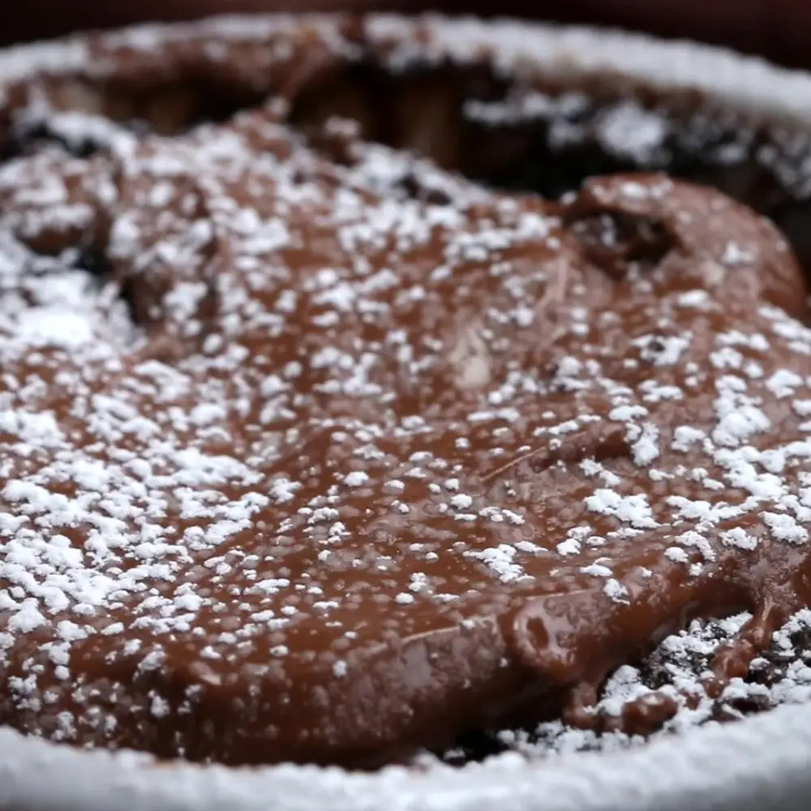

Chocolate Mug Cake

Description
Delicious just the way it is!
Ingredients
- 4 tablespoons flour
- 3 tablespoons sugar
- 2 tablespoons cocoa powder
- ½ teaspoon baking powder
- 3 tablespoons milk
- 1 tablespoon oil, vegetable or canola
- 1 teaspoon vanilla extract
- 1 tablespoon chocolate hazelnut spread, plus more for topping
- powdered sugar, for topping, optional
Directions
- In a 12-ounce (375 ml) mug or larger, mix all ingredients
(except the chocolate hazelnut spread) until just combined.
- Once combined, spoon the chocolate hazelnut spread on top of the batter.
- Microwave on high for 90 seconds to 2 minutes, watching to make sure it doesn’t spill over
(depending on the size of the mug).
- Let cool one minute before eating. Top with additional chocolate hazelnut spread and powdered sugar (optional).
- Enjoy!